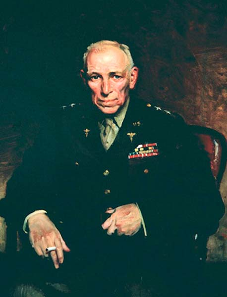

| Norman Thomas Kirk NORMAN THOMAS KIRK was born on 3 January 1888, in Rising Sun, Maryland. He graduated from Tome School, Port Deposit, Maryland, in 1906, and received his Medical Doctor degree from the University of Maryland in 1910. He served as resident physician at the University Hospital, Baltimore, and as clinical assistant at the United States Soldiers' Home Hospital, Washington, DC, before being commissioned as first lieutenant in the Medical Reserve Corps on 29 May 1912. After a short period of active service, Kirk was appointed to the Regular Army as first lieutenant, Medical Corps, on 22 May 1913. His first service was at the Soldiers' Home, Washington, DC, in June 1912. In September he enrolled in the Army Medical School, Washington, DC, and following graduation, was stationed at Field Hospital No. 3, Texas City, Texas, from June 1913 to July 1915. For seven months of the period, Field Hospital No. 3 was stationed at Vera Cruz, Mexico, as part of the Punitive Expedition. Kirk was then assigned to the Cantonment Hospital, 2d Division, Galveston, Texas, as operating surgeon. That same month, July, he went to Fort Grant, Panama Canal Zone, for a brief tour of duty, after which he was transferred to Fort Sherman, Panama Canal Zone, in October 1915. He stayed there until transferred to the United States for duty at the Base Hospital, Brownsville, Texas, in July 1916. In September 1917, he was assigned to the Medical Officers' Training Camp at Camp Greenleaf (Fort Oglethorpe), Georgia, serving there until January 1919, when he was ordered to Walter Reed General Hospital, Washington, DC, for surgical service. At Walter Reed in 1919, he transferred his practice from general surgery to bone and joint surgery. He was credited with treating at least one third of the major amputations incurred in World War I. He was acknowledged as one of the leading experts in the United States on amputation, and his major publications confirmed his reputation in both the military and civilian medical communities. After brief periods of study at the Johns Hopkins University Hospital, Baltimore, Maryland, and the Massachusetts General Hospital, Boston, Massachusetts, in 1925, he was assigned to the Station Hospital, Fort Sam Houston, Texas (now Brooke Army Medical Center), in October 1925, as Chief of the Orthopedic Section and Assistant Chief and Ward Officer, Surgical Service. He became Chief of Surgical Service in July 1927. In February 1928, he was transferred to the Sternberg General Hospital, Manila, Philippine Islands, as Chief of Surgical Service. Kirk returned to the United States in July 1930 and assigned to Walter
Reed General Hospital, Army Medical Center, Washington, DC, as Chief of
the Orthopedic Section. He entered the Medical Field Service School Carlisle
Barracks, Pennsylvania, in October 1931, and following his graduation from
the Advanced Course, returned to his duties at the Walter Reed General
Hospital.
In July 1934, General Kirk became Chief of Surgical Service at the Station
Hospital, Fort Mills, Philippine Islands, and in February 1935, became
Chief of Surgical Service, Sternberg General Hospital, Philippine Islands.
In July 1936, Kirk was appointed Chief of Surgical Service, Letterman
General hospital, San Francisco, California, serving in that capacity until
January 1941. At that time, Kirk returned to Walter Reed General Hospital,
Army Medical Center, Washington, DC, as Chief of Surgical Service.
When World War II appeared imminent, General Kirk assisted the Supply
Division, Surgeon General's Office, in the revision of the Medical Department
Supply Catalog, thus ensuring that it would include the proper items for
the maximum professional care and treatment of the battle wounded.
Kirk was named Commanding Officer, Percy Jones General Hospital, Battle Creek, Michigan, in June 1942. Here, under his supervision, the Battle Creek Sanitarium was converted into a general hospital and its staff (mainly civilians) selected, organized, and trained. During the war, Percy Jones General Hospital served as a specialized center for the treatment of amputations, neurosurgery, deep X-ray therapy, and neurology. This hospital, originally intended to accommodate 1,750 patients, was expanded and together with Camp Custer, Michigan, became a hospital center with a maximum patient load of 12,000. After a contentious selection process, President Franklin D. Roosevelt selected Kirk to replace Major General James Magee as The Surgeon General. He was appointed Surgeon General, United States Army, on 1 June 1943. Under his guidance as Surgeon General, the U.S. Army in World War II achieved a record of recovery from wounds and freedom from disease never before accomplished in history. For the first time, surgery was taken to the men at the front: 96 out of every 100 wounded who lived to reach a hospital survived as against 92 in World War I. Mobile hospitals were set up within a few miles of the front lines and medical aid men went into battle with the troops, administering to the wounded where they fell. Prompt surgery, aided by penicillin, the sulfa drugs, whole blood, and blood plasma administered at the front, together with new and improved surgical techniques was responsible for returning 375,000 of World War II's 598,000 wounded to duty in the theater and an additional 55,200 to duty in the United States. Through the Army's preventive medicine program deaths from disease were
reduced to 0.6 man per thousand men per year as against 16.5 in World War
I. Malaria was reduced from hundreds of cases per 11,000 men per year to
less than 50. The dysenteries, which once put entire regiments and armies
out of action, occurred among less than 90 out of every 1,000 men per year
and were readily controlled. During World War I, 38 percent of the men
who contracted meningitis died compared with 4 percent in this war; and
24 percent of those who contracted pneumonia died, compared with only six-tenths
of one percent in this war. Through the development and use of toxoids
and vaccines, fear of tetanus, typhoid, and typhus, became a thing of the
past. No deaths resulted from these diseases among troops inoculated against
them. Not a single case of yellow fever occurred in the Army.
This record was accomplished by a Medical Department that included only
1,200 doctors in the Regular Army Medical Corps at the beginning of the
emergency and reached a peak strength of 47,000 Medical Corps, 15,000 Dental
Corps, 18,700 Medical Administrative Corps, 2,000 Sanitary Corps, 2,000
Veterinary Corps, 61 Pharmacy Corps, 57,000 Nurse Corps, 1,600 Dieticians,
1,300 Physical Therapists, and some 535,000 enlisted personnel trained
for such duties as medical aid men, litter bearers, ambulance drivers,
and technicians. These were the personnel who, under General Kirk's direction,
planned and organized the work of the Army Medical Department and cared
for the largest American Army in history fighting a global war, administering
to the 15,000,000 patients admitted to the 692 hospitals overseas and the
65 general and 13 convalescent hospitals in this country.
Personal Data Date and Place of Birth: 3 January 1888, Rising Sun, Maryland Date and Place of Death: 13 August 1960, Walter Reed General Hospital, Washington, D.C. Parents: Thomas and Anna (Brown) Kirk Marriage: 21 September 1917 Children: Ann Kirk Willard and Jane Kirk Kimbrell
Career Summary 1912 1st Lieutenant, Medical Reserve Corps, 29 May 1912
1912 Soldiers' Home, Washington, DC
1912-1913 Army Medical School, Washington, DC
1913-1915 Field Hospital No. 3, Texas City, Texas (For seven months of this period,
Field Hospital No. 3 was stationed at Vera Cruz, Mexico, as part of the
Punitive Expedition).
1915 Operating Surgeon, Cantonment Hospital, 2d Division, Galveston, Texas
1915 Fort Grant, Panama Canal Zone
1915-1916 Fort Sherman, Panama Canal Zone
1916-1917 Base Hospital, Brownsville, Texas
1917-1919 Commanding Officer, Regimental Detachments
1919-1925 Bone and Joint Surgery, Walter Reed General Hospital, Washington, DC.
(With brief tours of duty at Johns Hopkins University Hospital, Baltimore,
Maryland, and the Massachusetts General Hospital, Boston, Massachusetts
in 1925)
1925-1927 Chief of the Orthopedic Section and Assistant Chief and Ward Officer,
Surgical Service, Station Hospital, Fort Sam Houston, Texas
1927-1928 Chief of the Surgical Service, Station Hospital, Fort Sam Houston, Texas
1928-1930 Chief of the Surgical Service, Sternberg General Hospital, Manila, Philippine
Islands
1930-1931 Chief of the Orthopedic Section, Walter Reed General Hospital, Army
Medical Center, Washington, DC
1931-1932 Advanced Course, Medical Field Service School, Carlisle Barracks, Pennsylvania
1932-1934 Chief of the Orthopedic Section, Walter Reed General Hospital, Army
Medical Center, Washington, DC
1934-1935 Chief of the Surgical Service, Station Hospital, Fort Mills, Philippine
Islands
1935-1936 Chief of the Surgical Service, Sternberg General Hospital, Manila, Philippine
Islands
1936-1941 Chief of the Surgical Service, Letterman General Hospital, San Francisco,
California
1941-1942 Chief of the Surgical Service, Walter Reed General Hospital, Army Medical
Center, Washington, DC
1942-1943 Commanding Officer, Percy Jones General Hospital, Battle Creek, Michigan
1943-1947 Surgeon General, United States Army
1947 Retired, 1 June 1947
Memberships
American Academy of Orthopaedic Surgeons
Fraternities
Nu Sigma Nu
Honorary Degrees and Awards
Sc. D., Davidson College, 1944
Writings (Book) Kirk, Norman T. Amputations, Operative Techniques. Washington,
DC: Medical Interpreter, 1924. Republished as monograph by Prior Co., Hagerstown,
Maryland, 1942 and 1943.
(Chapters in Encyclopedias) Amputations, Lewis, Practice of Surgery, vol. 3, Chap. 10, 273 pp.: Published by Prior Co., Hagerstown, Maryland, 1928-30. Cinoplastic Amputations and Prosthesis; Cyclopedia of Medicine, Surgery, and Specialties, vol. 1:438-475, Published by F.A. Davis, Philadelphia, 1939. Prothesis, Christopher-Saunders, 1939. Tetanus, Nelson-Loose leaf Living Surgery, vol. 1, Chap. VA,
pp. 475D-476H, 1941.
(Articles)
Kirk, Norman T. "End Results of 158 Consecutive Autogenous bone Grafts for non-union in long bones: (A) in Simple Fractures; (B) in Atrophic Bone Following War Wounds and Chronic Suppurative Osteitis (osteomyelitis)." ________. "Emergency Splinting of Fractures for Transport." Military Surgeon 60 (May, 1927): 532-540. ________. "Neurotrophic Changes in Leprosy." Military Surgeon 69 (July 1931): 18-25. ________. "Care and Evacuation of Fracture Cases: Battle Casualties." Military Surgeon 70 (May 1932): 462-471. ________. "Amputation Stumps of Lower Extremity." Journal Bone and Joint Surgery 15 (January 1933): 101-111. ________. "Fracture of the Clavicle." American Journal of Surgery 38 (December 1937): 485-488. ________. "Non-Union and Bone Grafts." Journal and Joint Surgery 20 (July 1938): 621-626. ________. "Prophylaxis and Treatment of Gas Gangrene (C1. Welchii) by Sulfanilamide." Army Medical Bulletin 51 (January 1940): 26-27. ________. "Organization for Evacuation and Treatment of War Casualties." Ann. Surg. 113 (June 1941): 1020-1033. ________. "Military Orthopedics." Surg. Clin. No. Am. 21 (December 1941): 1685-1702. ________. "Amputations in War." J.A.M.A. 120 (5 September 1942): 13-16. ________. "Army Splints." Army Medical Bulletin 64 (October 1942): 76-86. ________. "The Development of Amputation." Bulletin of Medical Library
Association 32, No. 2 (April 1944)
|